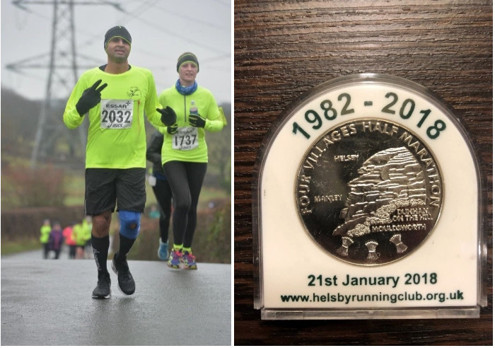
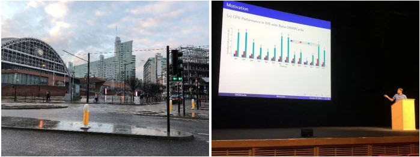
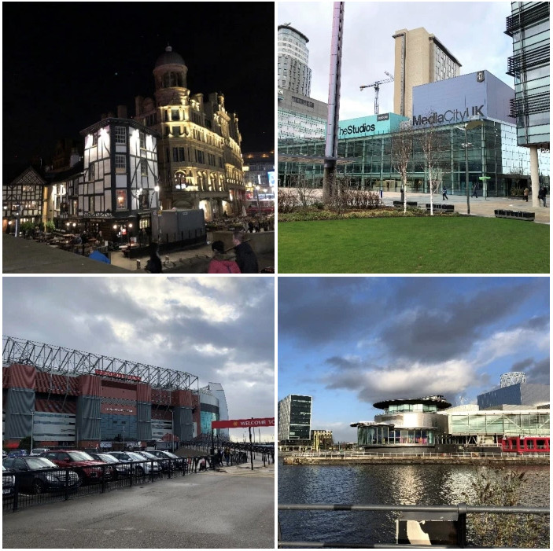
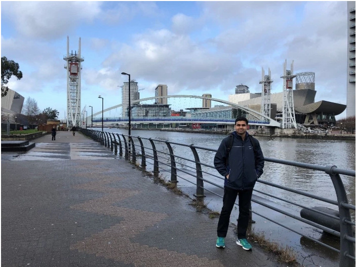
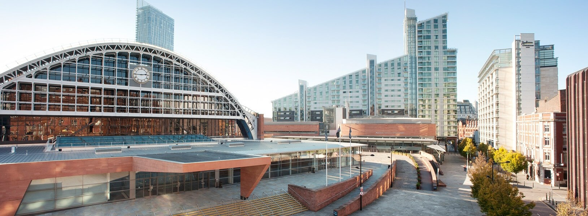

I visited Manchester, United Kingdom in January 2018 to present my paper titled HAShCache at HiPEAC 2018. While at Manchester for the conference, I went around the city and ran the four villages Half Marathon in the bitter cold of British winter at Helsby.
The entire travelogue article is posted at the CSA Travel Blog - The website is no longer maintained. Below is a mirror of the article.
This post is about my visit to Manchester, United Kingdom to attend the HiPEAC 2018 conference. The conference took place from 22nd to 24th January 2018 at the 130 year old Manchester Central Convention Center.
I was to present my paper titled HAShCache in the main track of the conference. The work aims to architect an effective organization for stacked DRAMCache to improve performance of integrated heterogeneous CPU+GPU architectures. It was submitted to the ACM TACO journal which has a rolling submission window throughout the year. Papers accepted in the journal the previous year are then invited to present their work at the annual HiPEAC conference.
The Plan
I started planning for the trip as soon as I received the invitation letter in Nov 2017. The UK visa process was smooth, and I received the passport with the stamped visa in 1 week. I booked the KLM flight to Manchester via Amsterdam and stay at Premier Inn hotel diagonally opposite to the conference venue.
Short backstory here: Along with my masters degree, IISc gave me a wonderful hobby that kept me going during the rigors of the program – RUNNING. My first ever competitive run on 2016 Republic Day had kindled a running fire in me and by 2018, I had already run 5 Half Marathons. My travel to Manchester gave me a perfect opportunity to do my debut race outside the country – my first international half marathon. I signed up for the 35th Essar four villages Half Marathon scheduled on 21st January 2018 at Helsby village (about 55 kms from Manchester).
The Journey
After a long hiatus of 5 years, this would my first trip out of the country. While doing my web check-in, I quickly realized my snafu – If you book a seat on Air France, KLM, Delta or Etihad – they are all operated on code share basis by Jet Airways!! As I entered the Bengaluru International Airport, I was already mentally prepared for bad airline service. But hey could be worse, at least I would get good Indian meals I thought. I couldn’t be more wrong – the Jet Airways flight to Amsterdam was delayed which meant I would miss my connecting flight to Manchester. Once I boarded the flight (as expected), my in-flight entertainment system screen was tiny and had headphone jack and volume button issues. This was a 13.5 hour flight, and I settled in recognizing there was very little the airhostess could do as the flight was full. I landed in the Amsterdam airport a full 4 hours late, and I ran from pillar to post in this massive airport to figure out how to get my flight rescheduled, get my boarding pass and get to the boarding gate. Eventually I reached Manchester on the evening of 20th Jan.
The Run
The very next morning, a very kind gentleman and a fellow runner at the event picked me up from the hotel to reach the race venue. The conditions were extreme and unlike anything I had ever prepared for here at Bangalore. Temperatures of -1 degrees Celsius with snow and rain pelting down and a cold bone chilling wind to top it off. Jet lagged from travel and with no good veg food the previous night meant I completed the 21.1 kms in 2 hours 10 mins. Yet it was a very memorable experience for me to run in the famed and lush serene British countryside.

The Conference
In a nutshell – The conference had 3 excellent keynotes. The opening keynote was by Dr Maria Girone, CTO of CERN, who spoke about the computing challenges at the Large Hadron Collider (LHC). The entire world is intrigued by the work done at the LHC, and Dr Maria gave us a glimpse of the work and problems people at the LHC are attempting to solve. She illustrated the way compute is structured at LHC to store and analyze the results of the experiments. The rate of data generation (1 PB/s of data generated by the detectors and over 60PB/s is stored and processed per experiment) and processing capability along with the scale of compute being used at LHC is truly mind boggling and poses several interesting problems to computer science researchers from all streams.
The second day, Dr Dileep Bhandarkar from Qualcomm Data Center division spoke about the emerging trends in the datacenter. Dr Dileep motivated the need for improved energy efficiency in modern processors for data centers. He delved into details of the upcoming ARM based high performance processors for data centers that are being engineered at Qualcomm. These processors have the ability to provide good performance compared to modern x86 based cores while being much more energy efficient. Because of the simpler ARM cores, the die is also able to accommodate larger capacity caches improving memory access latency. From being leaders in mobile processor technology, Qualcomm have adapted lessons learnt from the mobile computing platforms and are including several heterogeneous add-in accelerators on die. His talk was very well received and showed that there is plenty of opportunity for innovation and research into improving efficiency of chips.
On the final day Daniel Belov (CTO of Google Deep Mind) spoke about the advancements in Deep Neural Networks and the challenges that lay ahead. He showcased the work at Deep Mind and highlighted challenges encountered when training deep reinforcement learning agents on large workloads with hundreds of terabytes of data. He also spoke about why it poses unique challenges when designing distributed systems and hardware.
There were several parallel workshops held along with the main track of the conference. This gave me an opportunity to concisely understand some of the problem statements other researchers were tacking in adjacent domains. My presentation was in the forenoon session on the second day of the conference and was attended by a fair number of people and including the keynote speaker of the day and the compilers legend Paul Feautrier.
HiPEAC also gave me the opportunity to network with Profs and students of the HPC, architecture and compiler community some of whose papers I had fondly read. The banquet dinner at Hilton Manchester Deansgate was a true fine dining experience creating an informal setting to socialize and network to make connections for everything from jobs to pursuing PhD to floating nascent ideas.

The City
Manchester has a long history from the early vibrant cultural and social scene right from the industrial revolution to WW2 and beyond. The old Victorian era buildings and heritage is very preserved in the city center and is a beautiful sight to see and walk around. The city is well connected by trams and metro rail making it easy to move around the city. I visited the area of the Quays in downtown Manchester which is home to MediaCityUK housing the BBC studios where several famous TV shows and news bulletins are recorded and broadcast. The area also houses a huge museum which showcases the rich history of Manchester and the events that shaped the city. It also has one of the pieces from the building at Hiroshima after Little boy and a shard of the World Trade Center building after 9/11 to remind people about the horrors of war.
Manchester City tour isn’t complete without stopping off at the world famous Old Trafford football stadium where the echoes of “Glory Glory Man United” ring during the club football matches. Unfortunately, there was no match being played when I visited, but it was an experience in itself to see the magnificent arena where legends have played. I stopped by at the practice pitches to try to catch a glimpse of some famous footballers but alas it was not to be as this was off-season.
Britain’s most famous flea market is located at Bury in Greater Manchester. The market has various stalls selling absolutely everything you might need. Vendors here always sold me everything with a friendly face and lovely manners. There are plenty of eateries here, and I spent a few hours here trying the range of street food from the Bury black pudding to potato pies. I picked up some souvenirs and a variety of handmade chocolates here.


I had a remarkably memorable experience attending HiPEAC 2018 at Manchester. It is here that my M.Sc. (Engg) research work and my hobby culminated to a telltale ending. I thank Prof Govindarajan and IISc for giving me this opportunity to attend the conference.
← Back to Blogs
Travelogue - Manchester, UK for HiPEAC 2018 conference
adarshpatil
24th March 2018

Comments (1)
Soumik
May 30, 2018
Came to read the article, found a backlink to another page!